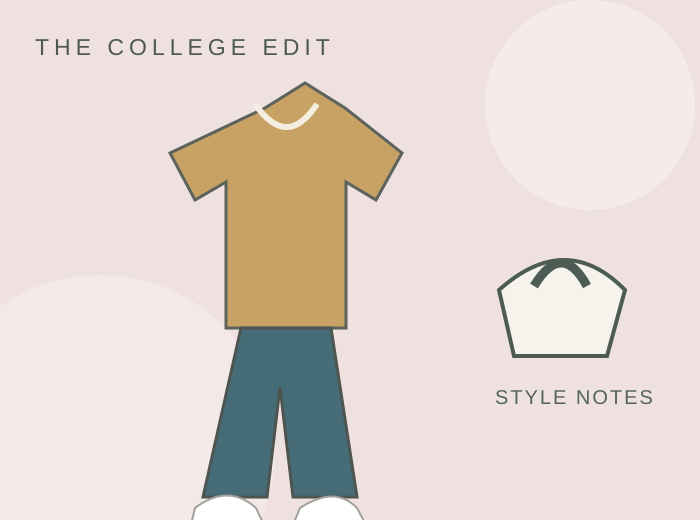

An outfit for every forecast.
Refresh your college wardrobe with flexible layers and seasonal accessories, from crisp fall game days to cold walks across campus and warm spring afternoons.
Simple ideas you can actually wear
Use these outfit formulas as inspiration rather than shopping lists. Swap in colors, items, and accessories you already love.
These are fictional editorial examples for a class project; no products are offered for sale.

Fall layers
Combine a knit sweater, jeans, and a lightweight jacket for changing temperatures. Add a scarf in a school color for game days.

Winter warmth
Prioritize an insulated coat, weather-ready shoes, and warm layers. A matching hat and scarf keep the look coordinated.

Spring and summer
Choose breathable tops, relaxed shorts or skirts, and a light cardigan for chilly indoor spaces.
Keep exploring
Style changes with the plan. Try college game day outfits, college going out outfits, affordable college outfits, or seasonal outfit ideas.